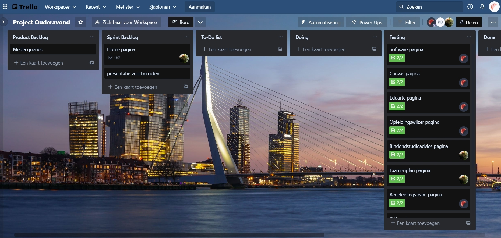
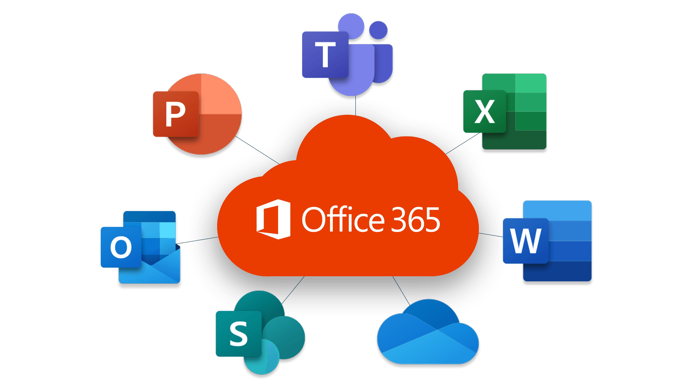

Software
Visual Studio Code
Een broncode editor die je kan gebruiken om te coderen in verschillende programeer talen zoals: HTML, CSS, PHP, Javascript en nog veel meer.
Visual Studio Code Extensions
Met Visual Studio Code Extensions kan je het programmeren in Visual Studio Code makkelijker maken door sugesties te geven terwijl je bezig bent maar ook al een helpende hand met de opmaak van je bestand in het begin.
Figma
Is een ontwerp programma waar je ontwerpen van je site in kan maken en waar je een map van je website kan maken om zo te zien wat je op welke pagina wil hebben dit zodat je al een sturctuur heb van hoe je alles eruit wil laten zien.
Trello
Trello is een Organisatie programma waar je je projecten in ken neerzetten wat er allemaal nog gedaan moet worden zo kan je zien wat er allemaal al gedaan is en wat er nog gedaan moet worden ook kan je bij elk onderwerp in trello een extra beschrijving zetten over hoe iets gedaan moet worden of bepaalde eisen die erin moeten zitten.
Office 365 pakket
Office 365 is een internetdienst die je toegang geeft op veel verschillende software wat gebruikt wordt voor bedrijven, thuisgebruik en in het onderwijs. Deze internetdienst wordt gratis aangeboden vanuit school. In dit pakket zitten de licenties van: Word, PowerPoint, Excel, Outlook en nog meer.
Wordpress
Wordpress is een programma waar je websites kan maken dit is heel fijn voor opdrachtgevers want met deze software kunnen zij makkelijk aanpassingen doen aan hun site om een voorbeeld te geven kan je bijvoorbeeld een site van een groentenwinkel nemen als hij zijn prijs verhoogt of verlaagt moet hij altijd aankloppen bij een software developer, maar aangezien dit niet handig is voor de groentenwinkel is het ook niet handig voor de software developer. Dus hier is een oplossing voor bedacht zodat de groentenwinkel niet steeds terug hoeft te komen naar de software developer maar dat ze het zelf heel makkelijk kunnen aanpassen in Wordpress.
XAMMP (2e Jaar)
XAMMPP is een programma die je kan gebruiken om een locale server op te zetten, dit zodat je kan kijken of je PHP code werkt PHP word namelijk gebruikt voor inlog/registreer pagina's dus wil je wel kunnen zien of deze het doet. Dit kan door dit programma doen hij maakt dan een kleine server aan die je op de laptop of computer dan kan bekijken via het web. Dit gaan de studenten het meeste gebruiken in leerjaar 2 van de opleiding zodat ze voor PHP een server kunnen gaan opzetten om hiermee te gaan testen.
Larevel (2e Jaar)
Larevel is een programma waar je een framework in kan zetten een Framework is eigenlijk een template van een bepaald deel van de website dit zodat je het niet overal hoeft aan te passen dit is een soort zelde idee als een style bestand voor de opmaak van een website.